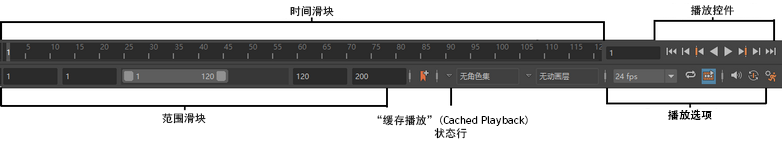

用于开发动画计时的 Maya 控件包括“时间滑块”(Time Slider)、“范围滑块”(Range Slider)、“播放控件”(Playback Controls)和“播放选项”(Playback Options)。还可以从“播放选项”(Playback options)区域快速访问和编辑动画首选项。

范围滑块(Range Slider)和播放选项(Playback Options)之间是“当前角色”(Current Character)和“当前动画层”(Current Animation Layer)菜单，可显示场景中使用的任何角色集和动画层。有关详细信息，请参见设置当前角色集和动画层。
时间滑块(Time Slider)
“时间滑块”(Time Slider)用于控制播放范围、关键帧和播放范围内的受控关键点。“时间滑块”(Time Slider)底部的蓝色条带是“缓存播放”(Cached Playback)状态行，沿顶部的彩色条带是时间滑块书签(Time Slider Bookmarks)。
有关详细信息，请参见时间滑块。
播放选项(Playback Options)
“播放选项”(Playback Options)可用于更改有关动画播放的设置。

A.“帧速率”(Framerate)菜单 B. 循环(Loop) C. 缓存播放(Cached Playback) D. 音量(Volume) E. 自动关键帧(Auto Key) F. 动画首选项(Animation Preferences)
有关其中每个设置的详细信息，请参见播放选项(Playback Options)。